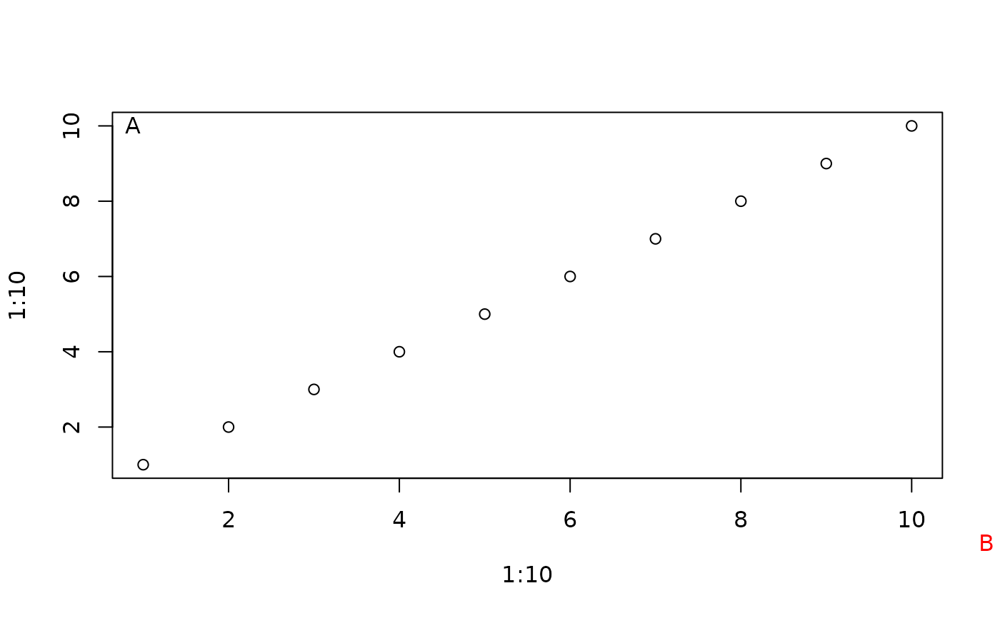

Find corner locations and optionally display a label
corner.label.RdFinds the coordinates in user parameters of a specified corner of the figure region and optionally displays a label there
Arguments
- label
Text to display. The default is to display nothing.
- x
an integer value: -1 for the left side of the plot, 1 for the right side
- y
an integer value: -1 for the bottom side of the plot, 1 for the top side
- xoff,yoff
Horizontal and vertical text offsets. Defaults to one half of the width and height of "m" respectively.
- figcorner
Whether to find/display at the corner of the plot or figure.
- ...
further arguments to the text command for the label
Details
corner.label finds the specified corner of the plot or figure and if label is not NULL, displays it there. The text justification is specified so that the label will be justified away from the corner. To get the label squeezed right into a corner, set xoff and yoff to zero.
Examples
plot(1:10,1:10)
corner.label("A")
#> $x
#> [1] 0.64
#>
#> $y
#> [1] 10.36
#>
corner.label(x=1,y=1)
#> $x
#> [1] 10.36
#>
#> $y
#> [1] 10.36
#>
corner.label("B",y=-1,x=1,figcorner=TRUE,col="red")

#> $x
#> [1] 11.11229
#>
#> $y
#> [1] -1.414088
#>